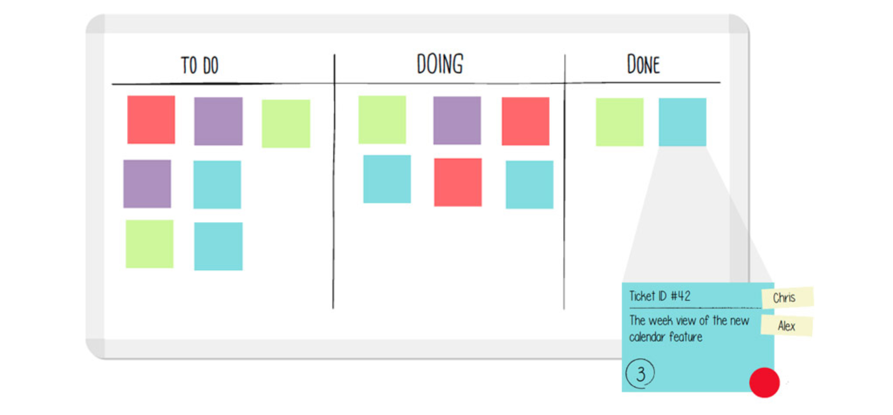
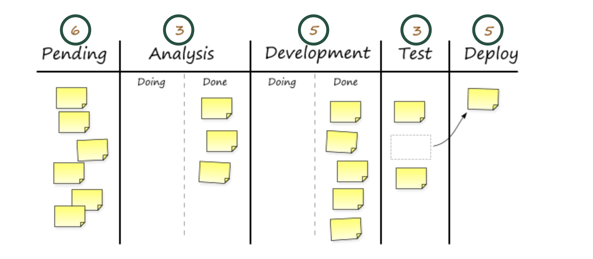
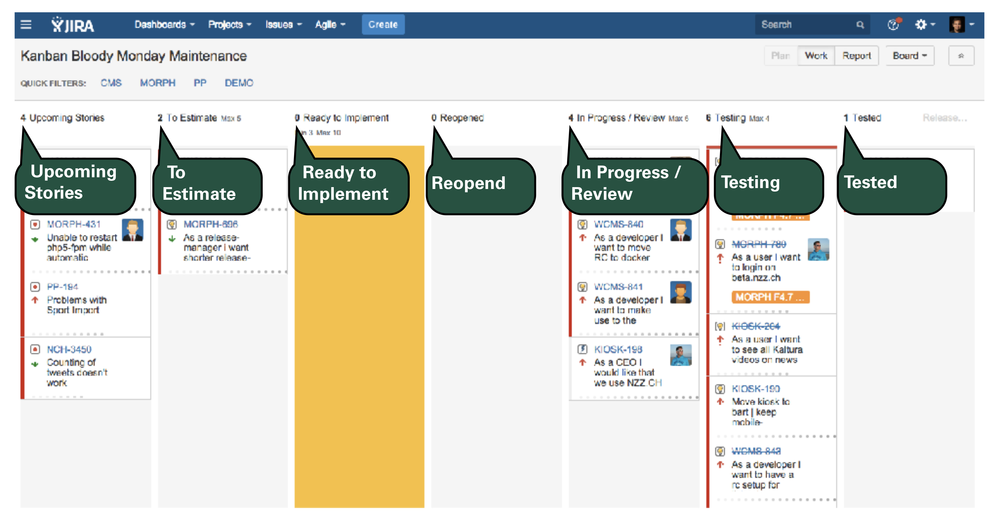
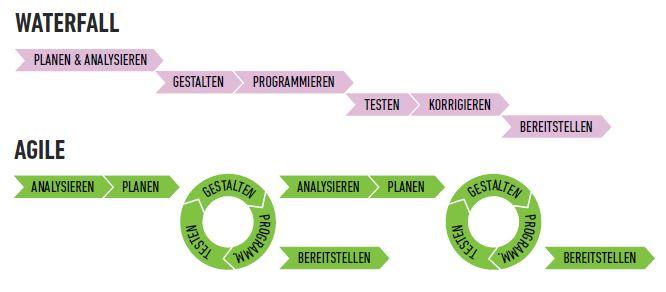
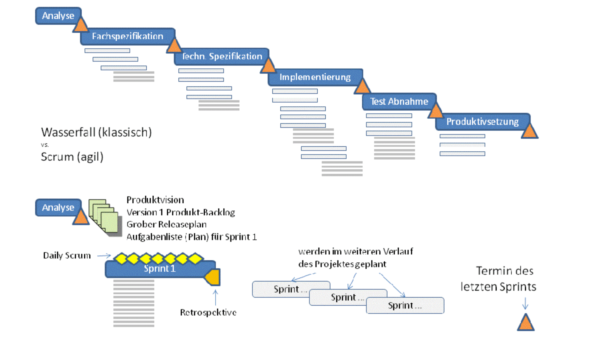
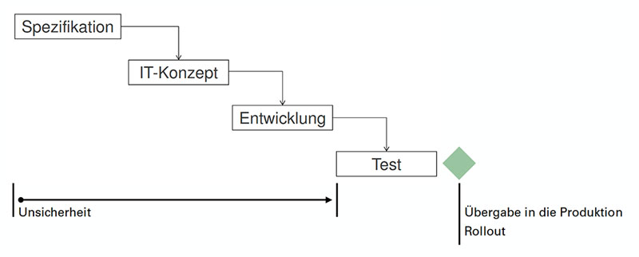

- Im PB stehen die funktionellen Anforderungen.
- Der PB wird vom Product Owner gepflegt.
- Der PB ist für jeden einsehbar.
...fördern das Verständnis (aus User Sicht)
...sind einzeln priorisiertbar
...sind einzeln test- und abschliessbar
...sind einzeln implementierbar
...sind einfach und schnell zu erstellen
User Stories fördern die Kommunikation und die Motivation.
(praktische Übung mit Severin, Nadia und Tiö)
Funktionelle Anforderungen sind üblicherweise als kurze und präzise User Stories formuliert:
As a... <Role>
I want to... <Feature>
So that I can... <Reason>
der Product Owner
Verantwortung für Produkt
- Interessen aller Stakeholders
(z.B. Anwender, Kapitalgeber)
- Wirtschaftlichkeit (ROI)
Verantwortung für Product Backlog
- Anforderungen
- Prioritäten
- Marktwert
Meetings
- Leitung des Sprint Planning
- Beurteilung der Ergebnisse im Sprint Review
der Scrum Master
- Beseitigt Hindernisse (Hindernisliste/Impediments)
- Schützt das Team vor externen Einflüssen
- Macht den Sprintfortschritt transparent (Burndown Chart)
- Fördert Kommunikation zwischen Team und Product Owner
- Erlaubt keine Kompromisse bei der Qualität.
Das Team
- kleine Teamgrösse: zwischen 5 und 9 Mitarbeiter
- besteht aus Vollzeit- und Dauermitgliederschaft
- einer für alle, alle für einen... gegenseitiger Respekt und Verständnis, Produktivität (Velocity) steigt mit der Zeit.
- bestimmt seine eigenen Teamnormen... entstehen aus der Arbeit des Team heraus. z.B. Architekturprinzipien, Daily Scrum Termine, Umgangsregeln.
Hinter der Vision steckt die Idee, etwas zu schaffen...
«ein Produkt herzustellen, das alle haben wollen»
Eine Vision erzeugt eine emotionale Reaktion auf ein klares Bild unseres Zieles hin.
- Warum will der Kunde etwas Neues?
- Wo benötigt er Unterstützung?
- Was sind seine Nöte?
Eine Vision ist Führungsaufgabe und nur dann eine Vision, wenn jeder sie kennt!
Um eine Taskliste zu erstellen, plant das Team gemeinsam mit folgenden Prioritäten:
MoSCoW
Must (60%)
Should (20%)
Could (20%)
Wont
Wont ist wichtig!
WIP = Work In Progress
Es ist wichtig, dass ein Team sein WIP Limit kennt.
«Work In Progress» ist immer limitiert. Generell wird das WIP Limit in Kanban pro Spalte definiert.
Kanban – die einfachste Variante
Kanban – erweiterte Variante
Kanban – Grundregeln
- Jedes Ticket wird geschätzt: Fibonaccis Zahlen 1,2,3,5,8,13,20...
- Jedes Ticket wir priorisiert (MoSCoW)
- Jedem Ticket wird ein Verantwortlicher zugewiesen.
Kanban – Beispiel: Bloody Monday Maintenance
Es gibt weniger Misserfolg. Da besteht mehr die Zusammenarbeit mit Kunden. Die Kunden können besser mitverfolgen.
Agiles Projektmanagementbezeichnet Vorgehensweisen, bei denen das Projektteam über hohe Toleranzen bezüglich Qualität, Umfang, Zeit und Kosten verfügt und eine sehr hohe Mitwirkung des Auftraggebers bei der Erstellung des Werks erforderlich ist. Charakteristisch für Agiles Projektmanagement ist die Fokussierung auf das zu liefernde Werk und die Akzeptanz durch die Anwender. Hingegen werden geschäftliche Anforderungen, wie z.B. die Termintreue, Kostentreue oder Erfüllung eines spezifizierten Leistungsumfangs weniger oder nicht berücksichtigt.
klassisch vs. agil
Das Konzept-Ablauf von Wasserfallprinzip läuft oft -> grob-detalliert-Abgabe. Diese Prozess arbeitet man weniger mit Kunden. Es ist eher ein Stil von A bis Z.
1. Projektidee
2. Projektantrag
3. Antragsprüfung
4. Entscheid
5. Projektauftrag
6. Projektfreigabe
Zeitdimension (Zeiträume, Zeitpunkte)
- Wieviel Zeit steht dir für die Umsetzung der Projektziele zur Verfügung?
- Welcher Anfangs- und Endtermin gilt für das Projekt?
- Welche Zwischentermine und Meilensteine gibt es im Projekt?
Kostendimension (Finanzielle Mittel, Sachmittel, Personal)
- Welches Budget steht dir für die Umsetzung der Projektziele zur Verfügung?
- Was kostet das gesamte Projekt?
Qualitätsdimension (Umfang oder Inhalt)
- Welche Leistung soll das Projekt überhaupt liefern?
- Was sind die Ziele des Projekts?
Bedeutung / Definition
Ein magisches Dreieck betrachtet die drei Parameter Qualität, Kosten und Zeit genauer. Alle drei Grössen stehen
hierbei in Beziehung und können sich gegenseitig beeinflussen. Die Veränderung eines einzigen Parameters wirkt sich
dabei mindestens auf eine weitere Grösse aus und kann somit zur Gefährdung der festgelegten Ziele führen.
Das Magische Dreieck verschafft also einen Überblick über die Ziele im Bezug auf die Termin-, Kosten- und Ressourcen und Leistungsplanung.